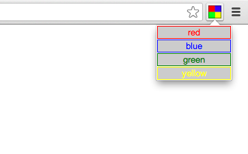

Browser actions are buttons that are displayed in the main Chrome toolbar to the right of the omnibox.
Browser action icons can be up to 19px square. Larger icons will be resized to fit, but for best results, using a 19px icon is recommended.
Icons can be set two ways: using a static image or using the HTML5 canvas element. Using static images is easier for simple applications, but you can do more dynamic UIs using the canvas element.
Static images can be in any format WebKit can display. These include: png, bmp, ico, jpg, gif.
Browser actions can optionally display a badge, which is a bit of text that is layered over the icon. Badges make it easy to update the browser action to display a small amount of information about the state of the extension.
The badge APIs allow any length of text, but limiting badges to a max of four characters is recommended.
Popups allow browser actions to show additional UI when the user activates them. Popups contents are implemented using HTML and the popup is automatically sized to the content size.
For the best visual impact, we recommend observing the following guidelines:
Developers declare their browser action using the following syntax:
"browser_action": {
"default_title": "Google Mail", // Optional. Shown in tooltip.
"default_icon": "images/icon19.png", // Optional.
"popup": "popup.html" // Optional
}
Note: Even if you don't include any of the values, you must include an empty browser_action entry in your manifest so that the system knows to reserve space for your browser action in the toolbar.